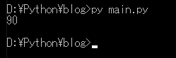

[Python] 19. 非同期IOのasync/await(asyncio)を使う方法
こんにちは。明月です。
この投稿はPythonで非同期IOのasync/await(asyncio)を使う方法に関する説明です。
Threadで関数を実行する時にその結果を受け取ることが難しいです。
link - [Python] 17. スレッド(Thread)とロック(lock)、そしてデッドロック(deadlock)
つまり様々な制御文を並列で処理して結果をすべて待たなければならないです。
# スレッドとスレッド停止するモジュール
import threading, time
# 結果の変数
ret = 0
def example():
# グローバル変数を使用
global ret
# 1から9まで繰り返す。
for i in range(1,10,1):
# 0.1秒待つ
time.sleep(0.1)
# 変数を増加
ret += i
# example関数をスレッドで開始する。
th1 = threading.Thread(target=example)
th2 = threading.Thread(target=example)
# スレッド開始
th1.start()
th2.start()
# スレッドが終了する時まで待つ。
th1.join()
th2.join()
# 結果出力
print(ret)

上みたいにfor文を二つのスレッドに実行して計算することができます。でも、何かソースが複雑みたいです。
グローバル変数でretを生成して各スレッドでデータを入力、修正します。もし各スレッドでパラメータによってデータを変わることにしようと思うとすごく複雑になります。
でも非同期処理(async/await(asyncio))を使うと簡単に処理することができます。
# async/awaitを使うためのモジュール
import asyncio
# 関数の前にasync宣言して非同期を指定した。
async def example():
# 変数宣言
ret = 0
# 1から9まで繰り返す。
for i in range(1,10,1):
# 非同期処理 0.1を待機
await asyncio.sleep(0.1)
# 変数を増加
ret += i
# 結果を返却
return ret
# 非同期を使うためにはasync関数で実行する。
async def main():
# example関数を開始
t1 = asyncio.create_task(example())
t2 = asyncio.create_task(example())
# t1とt2が終了すれば結果値を出してコンソールに出力
print(await t1 + await t2)
#async defを実行するための関数。
asyncio.run(main())
asyncとawaitを使えばthreadingを使う時よりソースを綺麗に作成することができます。
まず、asyncとは関数の前に使うキーワードです。外部では非同期を実行するためのキーワードだし、内部的にはawaitを使えるような予約語です。
main関数でt1とt2を待つawaitを使いましたが、もしmainがasyncではないしグローバル領域でawaitキーワードを使うとエラーが発生することになります。
awaitキーワードは非同期で待機する意味で、await asyncio.sleep(i)の場合はiを秒単位です待機する意味です。つまりtime.sleepと同じ意味です。
create_task担っているtaskオブジェクトからawaitを使えばスレッドが終了する時まで待機するthread.joinと同じ意味です。
最後にasyncio.runはasyncをcreate_taskみたいに非同期ではなく同期(プロセスの順番とおりに処理)で処理する呼び出しです。
asyncio.runを使ってもよいです。でも最近はrun_until_completeを使うことをお勧めしています。
またcreate_taskで非同期に分けましたが、asyncio.gatherも非同期処理が可能です。
# async/awaitを使うためのライブラリ
import asyncio
# 非同期を指定された関数
async def example():
# 変数設定
ret = 0
# 1から9まで繰り返す。
for i in range(1,10,1):
# 非同期処理 0.1を待機
await asyncio.sleep(0.1)
# 変数を増加
ret += i
# 結果を返却
return ret
# 非同期を使うためにはasync関数で実行する。
async def main():
# example関数を非同期で開始する。パラメータに関数を二つ入れることで非同期を二回に実行することと同じ意味。
ret = await asyncio.gather(example(), example())
# コンソール出力
print(sum(ret))
#async defを実行するような関数。
loop = asyncio.new_event_loop()
asyncio.set_event_loop(loop)
try:
# 非同期を待つ。
loop.run_until_complete(main())
finally:
loop.close()
asyncio.set_event_loop(None)
link - https://docs.python.org/3/library/asyncio-task.html
link - https://docs.python.org/3/library/asyncio-eventloop.html
link - https://stackoverflow.com/questions/55590343/asyncio-run-or-run-until-complete
ここまでPythonで非同期IOのasync/await(asyncio)を使う方法に関する説明でした。
ご不明なところや間違いところがあればコメントしてください。
- [Python] 21. データベース(mariaDB)を連結する方法2020/06/24 18:51:50
- [Python] 20. stringフォマード(Formatting)と補間法(interpolation)2020/06/23 19:03:21
- [Python] 19. 非同期IOのasync/await(asyncio)を使う方法2020/06/22 18:10:12
- [Python] 18. ネットワーク(Socket)通信する方法2020/06/18 19:53:56
- [Python] 17. スレッド(Thread)とロック(lock)、そしてデッドロック(deadlock)2020/06/18 00:19:45
- [Python] 16. IO(ファイル読み取り、書き込み)を扱う方法2020/06/16 18:37:00
- [Python] 15. クラスを継承する方法2020/06/15 18:20:07
- [Python] 14. クラスプロパティ(Property)2020/06/12 17:45:13
- [Python] 13. クラス関数(class method)とダック・タイピング、そして特殊メソッド2020/06/11 19:42:29
- [Python] 12. クラス(Class)を使う方法2020/06/10 19:33:33
- [Project design] プロジェクトを工程(ウォーターフォール vs アジャイル)2021/10/14 18:36:04
- [C#] 51. Reflection機能を使い方 - Method2021/10/14 18:34:21
- [C#] 50. Reflection機能を使い方 - Class2021/10/13 18:34:13
- [C#] 49. Operator(演算子)のオーバーロードを使い方2021/10/12 18:28:42
- [C#] 48. IEnumerableとIEnumerator、そしてyieldキーワード2021/10/11 19:49:33
- [C#] 47. Nugetを使い方(外部ライブラリ)とデータベース(MariaDB(Mysql))を使い方、そしてトランザクション(Transaction)2021/10/08 18:58:57
- [Window] MariaDBをインストールする方法2021/10/08 18:56:05
- [C#] 46. データベース(MSSQL)に接続する方法2021/10/07 18:39:58
- [C#] 45. ネットワークソケット通信(Socket)を使い方2021/10/06 19:06:25
- [C#] 44. ファイル(FileInfo)とディレクトリ(DirectoryInfo)を扱い2021/10/05 19:29:34
- [C#] 43. ストリーム(Stream)とバイナリ(byte[])、エンコード(Encoding)、そしてusingを使い方とIDisposableインターフェース2021/10/04 18:33:04
- [C#] 42. ファイルを扱い(IO)とファイルメタデータ(FileInfo)を使い方2021/10/01 20:10:21
- [C#] 41. Taskクラスとasync、awaitを使い方2021/10/01 18:59:14
- [Javascript ] WebのFull calendar(スケジュールカレンダー)の使い方法2021/07/15 21:35:36
- [Java] 56. Web serviceのサーブレット(Servlet)で初期化作業(properties設定)2021/07/02 17:10:36